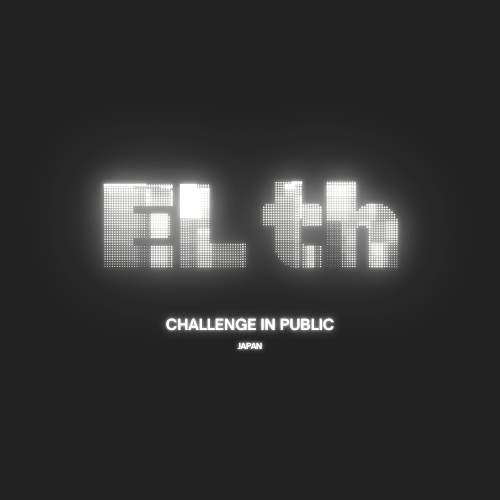
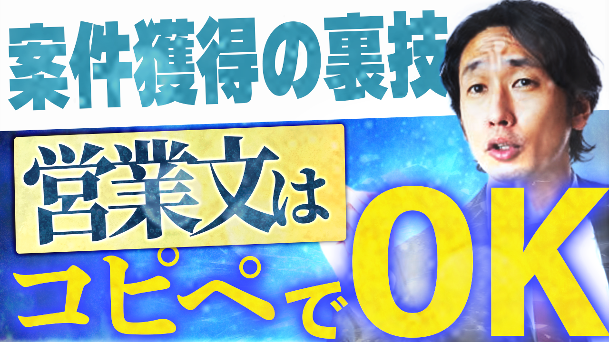
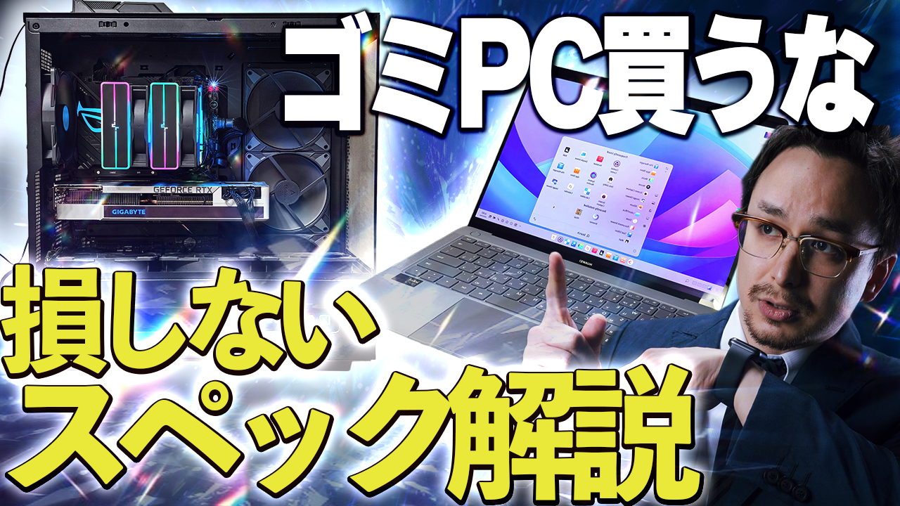

初めまして！
動画ディレクター兼デザイナーとして活動しているELth (エルス)です。
単なる「綺麗な画像」や「言われた通りのカット編集」を行う作業者ではありません。
ターゲット層の心理を読み解き、
色彩心理学に基づいた「ついクリックしたくなるサムネイル」から、
視聴維持率を爆上げする「ショート動画のテンポ感」まで、
マーケティング視点を持って制作を行っています。
実績・信頼の証
ココナラ 上位ランク（ゴールド）獲得
THUMBNAIL DESIGN
ココナラの検索画面やYouTubeで
「競合から浮く色」の選定と、
一瞬で伝わる可読性の高いタイポグラフィを設計します。
ABテスト用の複数パターン提案も可能です。
SHORT VIDEO EDITING
冒頭3秒のフックと、
無駄な間を徹底的に排除した超高速テンポで、
視聴者の目を釘付けにします。
TikTok、Shorts、Reelsに完全対応。
DIRECTION & ANALYTICS
ただ編集するだけでなく、
伸びる企画の提案や、
既存動画のデータ分析（アナリティクス）に基づいた
改善策をご提案します。
※ 掲載実績は一例です。画像クリックで詳細を確認できます。

● 意図: 信頼性担保のため青を基調としつつ、補色の黄色で視線誘導。

● 意図: スマホ表示でも文字が潰れないよう、極太ゴシック＋二重境界線を採用。
● 意図: 無音でも内容が伝わるフルテロップと、0.5秒ごとのカット割り。
「こんな動画作りたいんだけど…」
「サムネのクリック率が上がらなくて…」
といったご相談だけでも大歓迎です！
丸投げ（トータルサポート）もOK！
即レスでお返事しますので、お好きな方法でご連絡ください。